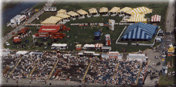

Waterworks Park Seating
There are three seating plans in the Waterworks Park bleachers. In the photo,
the Commodore Club (Plan #1) is generally the area on the right. At the left end is the
seating area for Singles, Pairs and Groups (Plan #3). The center area (Plan #2) is
for Corporate seating for groups of 25 or more, and can include a private patio style
tent. Each area is explained below.
Each of these plans is a 2-day reserved seating pass. A free
Gold Cup Pit Pass is included with every ticket.

(Photo copyright Joe Pfeiffer)
Right on the water's edge and located at the tight "Roostertail" turn, these grandstands
offer an excellent view of the course. The grandstands are next to the
Dodge Pit area and you can see some of the action in the pits. The
Hydromart is behind the bleachers offering souvenir's, food, refreshment's, beer & wine,
and a display area. This whole area sells out before race day, so plan ahead!
For weekend parking information, see the Waterworks
Park Parking info.
SEATING PLAN DETAILS:
- Singles, Pairs and Groups (Area #3):
- These tickets are for individuals or small groups that would like to
be seated in the Waterworks Park bleachers. They are $60 each.
- Commodore Club (Area #1):
- The blue striped patio tent behind the stands is available to Commodore Club ticket
holders for private relaxation between heats.
- The Deluxe Plan is $180/pair, and $80 for each add'l guest. The Deluxe
plan includes a Sunday catered lunch, a souvenir race program, and a
complimentary subscription to the Signal Flag newsletter.
- The Economy Plan is $150/pair, and $65 for each add'l guest.
- Prime seating choices are available for an add'l $10 each.
- Corporate seating (Area #2):
- In groups of 25 to 99 these tickets are $60 each; in quantities of 100+ they are $55.
- Also available is a hospitality package that includes a fenced in private
hospitality tent with tables and chairs, limited banner rights, and optional catering. The
hospitality tents are the yellow & white tents behind the grandstands. Call Spirit
Of Detroit THUNDERFEST for more information about this excellent opportunity to
entertain your clients and guests.
 Return to the Ticket Info page.
Return to the Ticket Info page.
Return to the Top THUNDERFEST page.
All contents Copyright © 1997 Spirit of Detroit THUNDERFEST, except where noted.
All Rights Reserved.
Web page created by Brian Reed.